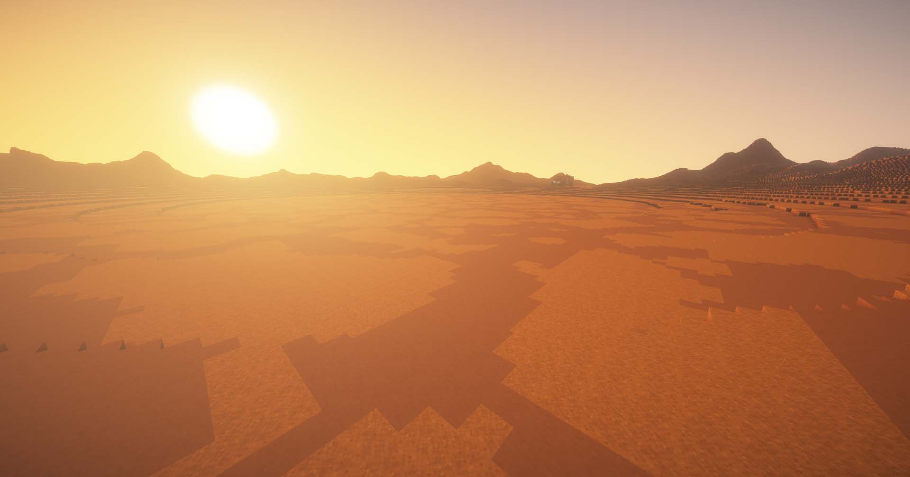
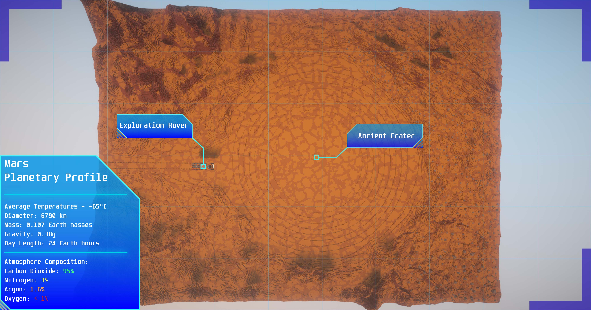
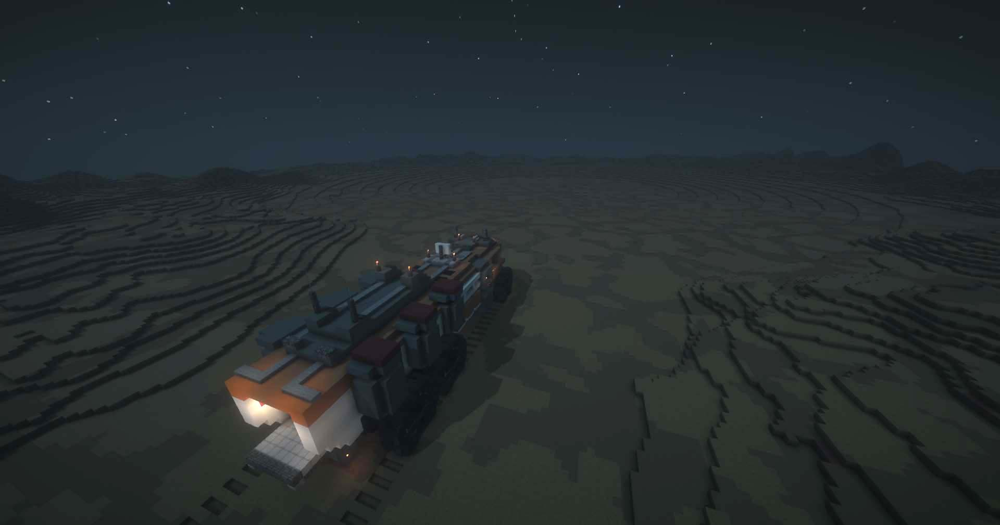

Identify potential energy sources suitable for the Martian environment and explain how these can be harnessed to generate electricity in a harsh, barren landscape.
Design and construct essential infrastructure to support life in Mars-like conditions while accounting for dust storms and extreme temperatures.
Create human necessities for future colonists by designing habitats and explaining their functionality/designs based on Mar’s climate/environment.
Analyze the environmental challenges of Mars, such as its thin atmosphere, lack of liquid water, and high radiation levels, and propose creative solutions for overcoming these challenges.

Mars Map


Mars Guiding Questions
What energy sources would be most efficient for generating power on Mars's surface?
How can you design a habitat that protects inhabitants from Mars’ extreme temperatures and high radiation?
What are the challenges of growing food on Mars, and how could a greenhouse or farm be designed in Minecraft to address this?
How can water be harvested or recycled on Mars? What methods could be used to provide clean water for the colony?